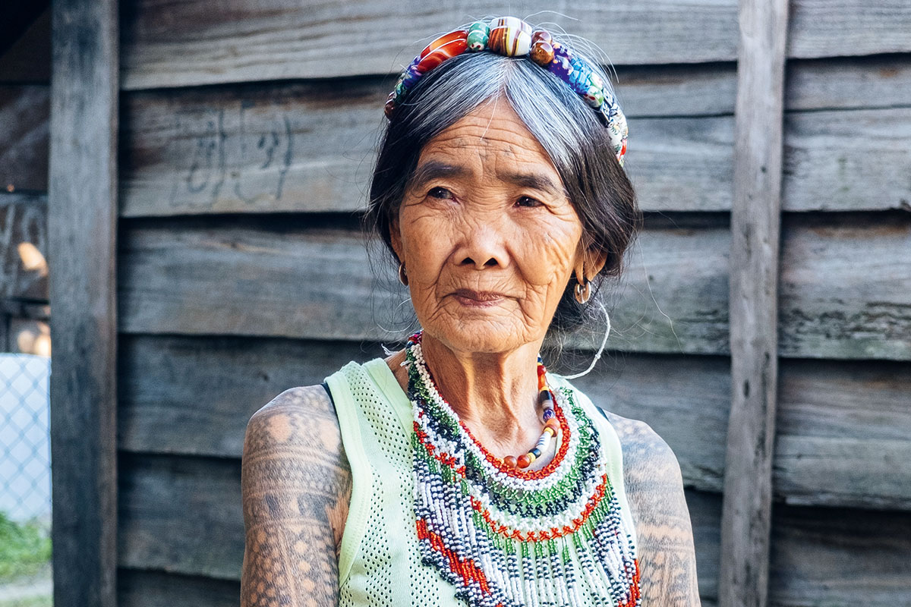
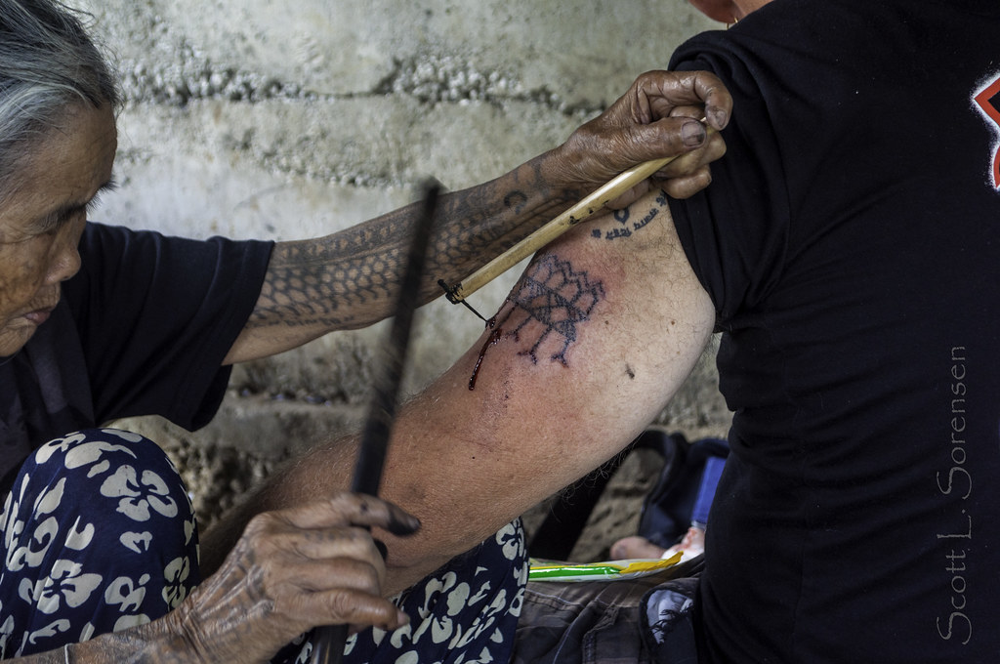

Things to see in Buscalan
Gaze at the "River Of Life"

Chico River is the longest tributary of Cagayan River, it has blessed the locals with exceptional harvest for thousands of years.
Take a hiking break at the Tumaniw Falls

The falls are a sign that you've made it half-way through your hike. Locals and children swim in the pools beneath the falls, soak your tired feet or join them.
Things to do in Buscalan
Whang-Od Tattoos
Whang-Od, born 17th February 1917, is the oldest living mambabatok, or traditional tattoo artist. People travel to Buscalan specifically to get a tattoo from her, there are special tours that will take you up through the mountains of Kalinga to meet her.

